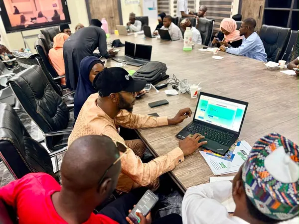
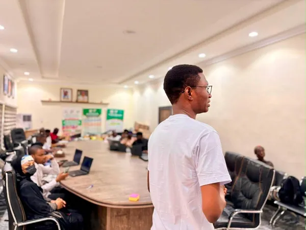
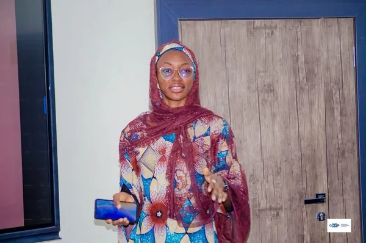
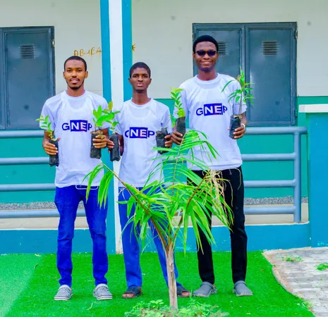
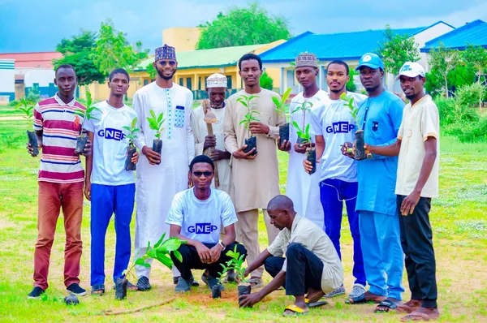
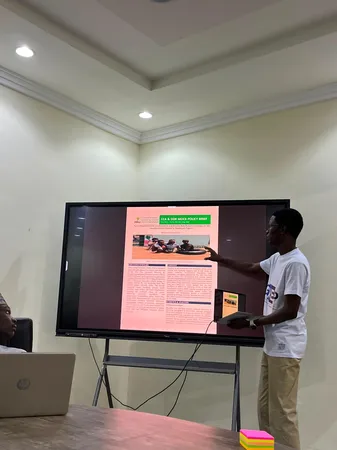
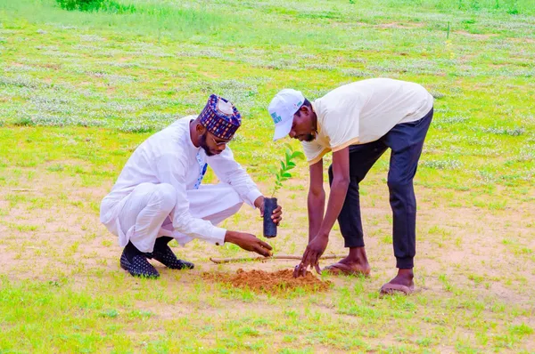
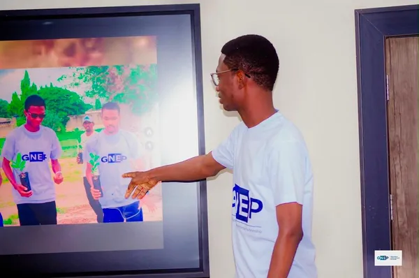
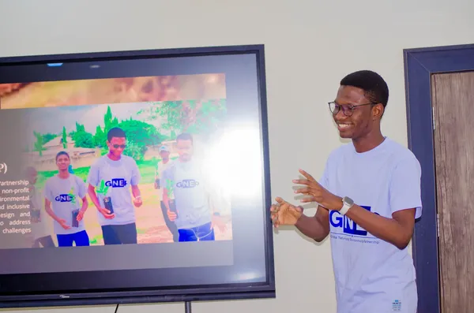
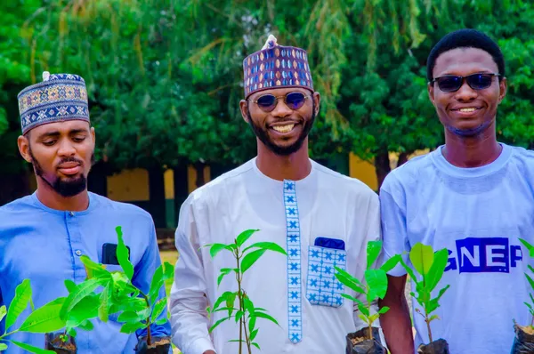

CSO Policy Advocacy & Proposal Training Graphic
Official release for the capacity workshop training 20 CSO leaders in policy briefs, competitive proposals, elevator pitches, and AI research tools.
Official release for the capacity workshop training 20 CSO leaders in policy briefs, competitive proposals, elevator pitches, and AI research tools.
Founder and Lead Mohammed Labaran Sani walking civil society representatives through evidence synthesis and policy brief structuring.

CSO WorkshopCivil society representatives collaborating on climate proposals using laptops.

CSO WorkshopParticipants assembled in Katsina conference hall for proposal & policy training.
Using participatory sticky-note methods to map local climate adaptation priorities.

CSO WorkshopCSO representative presenting key community resilience considerations.
Students and youth champions with economic tree seedlings outside school.
Volunteers carrying shovels and seedlings for restoration in Katsina.

Schools & YouthThree GNEP project leads holding tree seedlings in polybags.
Civic participants and youth holding seedlings before field deployment.
Youth team kneeling in grass planting economic tree seedlings.
Preparing planting pits in challenging dryland terrain.
Mohammed Labaran Sani and volunteers inspecting seedlings in Katsina.
Lead facilitator outlining policy brief structure and legislative engagement.
Hands-on laptop work sessions drafting competitive project proposals.
Civic organization leads following technical presentation modules.
Speaker demonstrating persuasive communication and elevator pitch skills.

Schools & YouthYouth volunteers mobilizing school students for ecological awareness.
Young advocate in GNEP t-shirt holding sapling ready for planting.

Policy & ResearchPresentation translating climate science into disaster risk reduction briefs.

Tree PlantingVolunteers planting indigenous seedling in Katsina field.
Line of community volunteers holding seedlings during AYINET joint drive.
Founder Mohammed Labaran Sani presenting documented field results.

CSO WorkshopCSO participants examining funding criteria and research data.
Full workshop cohort photo at Katsina State policy & proposal training.
Volunteers planting economic seedlings to counter desertification.
Team of youth digging and planting under clear Sahelian skies.
Youth leader practicing climate action elevator pitch.

Schools & YouthMohammed Labaran Sani with project leads holding tree seedlings.

Tree PlantingClose-up of young tree saplings nurtured for field planting.